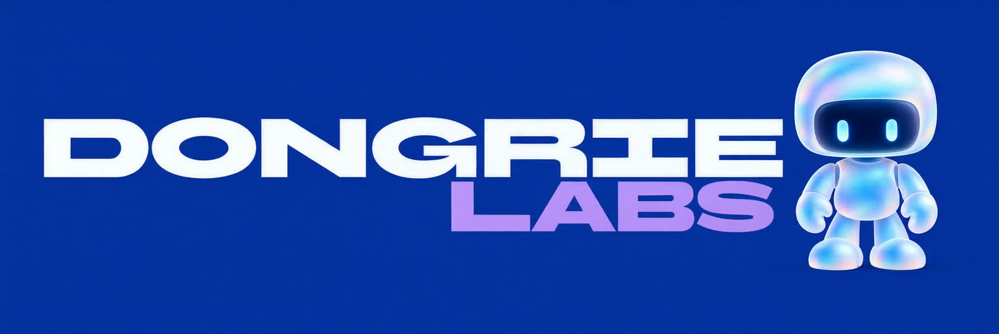
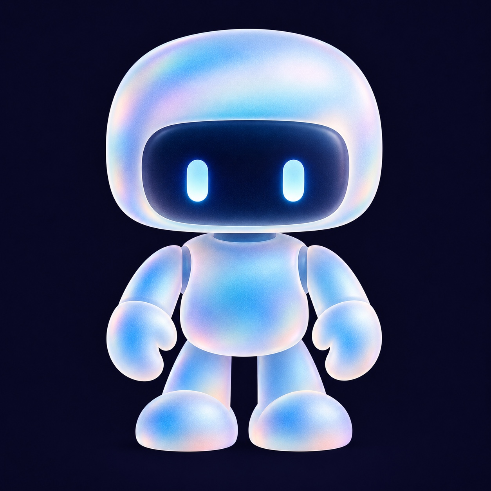

Apps
Aplicações pensadas para resolver tarefas e processos concretos.

Vamos conversarUma camada de IA que reúne informação, acompanha o trabalho e dá à tua equipa contexto para decidir melhor.
Vê como funciona
Emails, documentos, chamadas, decisões. A tua informação pode trabalhar em conjunto.
Põe o robô a construir.
Vê o que a tua equipa passa a saber.
Contexto reunido
Informação dispersa. Experimenta ligar a camada.
Exemplo interativo com dados fictícios. Sem ligação a ferramentas ou IA em tempo real.
AI LAYER · NA PRÁTICA
A informação ainda não chegou. Há espaço para ver tudo com clareza.
Desliza para acompanhar
Exemplo ilustrativo com dados fictícios.
Escolhe um ponto de partida. Vamos desenhar a primeira ligação.
Um primeiro esboço, preparado no teu navegador.
Sem registo. Sem envio dos teus dados.
Esboço gerado a partir das tuas escolhas, sem IA em tempo real. As integrações, acessos e viabilidade são avaliados contigo.
Sou o Gonçalo.
A Dongrie Labs é o meu estúdio de software e IA.
Começamos pelo trabalho real da tua equipa. Percebemos onde a informação se perde, que tarefas se repetem e onde faz falta contexto.
Depois construímos uma primeira solução, testamos com quem a vai usar e melhoramos a partir daí.
Contacto direto comigo. Desde o primeiro dia.O ponto de partida são as ferramentas e os processos existentes. Avaliamos o que pode ser ligado, através de que acessos e com que limitações. Uma integração depende sempre das possibilidades de cada ferramenta.
O objetivo é dar contexto e retirar trabalho repetitivo. Definimos contigo o que pode ser automatizado, o que exige aprovação e onde a decisão fica sempre nas pessoas.
Escolhemos um processo concreto, identificamos fontes de informação e definimos o resultado esperado. Depois avaliamos a viabilidade e construímos uma primeira versão para testar em utilização real.
Os acessos, o alojamento, as fontes e os limites de utilização são definidos antes de ligar dados reais. Neste site, as demonstrações usam dados fictícios e o configurador guarda as escolhas apenas no teu navegador.
A AI layer é o foco principal. Estas são outras áreas em que a Dongrie Labs também pode ajudar.
Aplicações pensadas para resolver tarefas e processos concretos.
Um produto próprio da Dongrie Labs.
Uma revisão da estrutura, clareza e experiência do teu website, com prioridades práticas de melhoria.
Preparação para interação e descoberta por sistemas de AI, incluindo WebMCP, AEO e GEO.
Conta-me onde o trabalho fica preso.
Vamos perceber o que podemos pôr a andar.